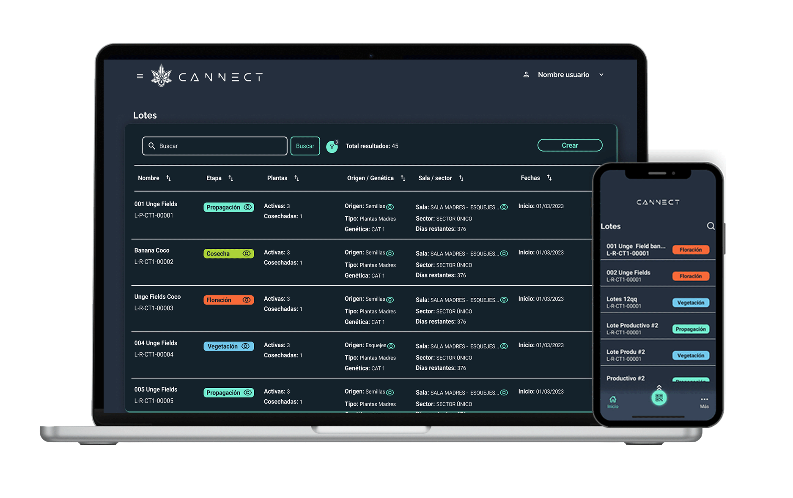
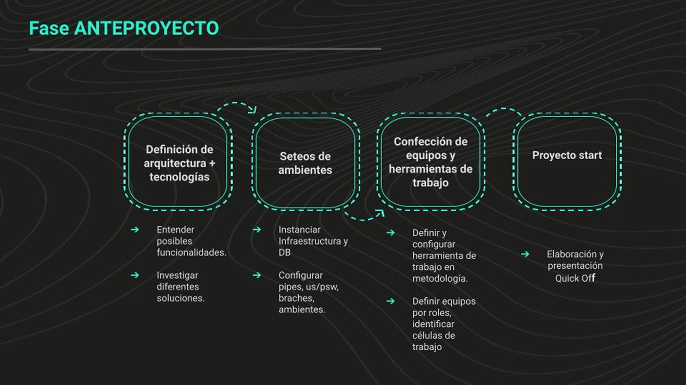
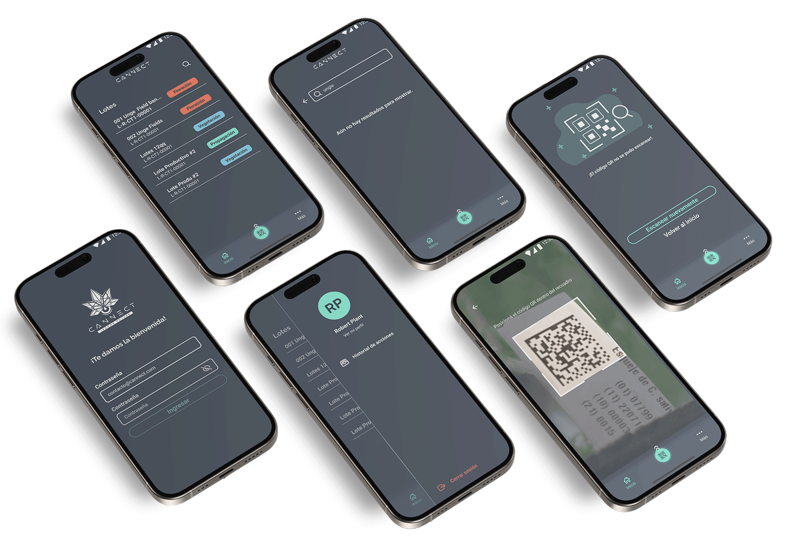

Cannect:
Biotech Traceability & Workflow Precision
Designing an intelligent traceability tool for a heavily regulated B2B biotechnology platform — reducing critical task completion time by 83% while eliminating compliance risk.

83%
Reduction in task completion time, from 30 seconds to 5
B2B
SaaS
Enterprise platform in a regulated, compliance-driven environment
End‑to‑end
Research, IA, wireframes, high-fidelity, hand-off
Context
A high-stakes B2B environment
Cannect is a core traceability platform engineered for biotechnology operations. It manages biological sample tracking, audit trails, and mandatory regulatory compliance documentation.
In this domain, precision, auditability, and clear information hierarchy are non-negotiable. Users — ranging from laboratory scientists to QA specialists and operations managers — operate under rigid compliance mandates. Interface ambiguity doesn't just cause frustration; it introduces severe regulatory risk and operational downtime.
Problem
High data density & cognitive overload
Over time, legacy features created a fragmented user interface characterised by unstructured high density — key operational data buried under unprioritised layouts, core traceability tasks requiring ~30 seconds due to scattered inputs and unclear validation loops.
Users had to mentally cross-reference multiple data points simultaneously, increasing the likelihood of compliance errors. In a regulated environment, cognitive fatigue isn't a UX inconvenience — it's an operational and legal liability.
The core design challenge
How do you drastically simplify a complex domain without sacrificing the granular precision, control, and audit readiness technical users rely on? The goal was clarity without oversimplification.
My role
End-to-end design ownership
As UX/UI Lead, I maintained full design ownership across the entire engagement:
- UX Research & Benchmarking: Led qualitative user interviews, task-analysis sessions, and competitive benchmarking in high-compliance SaaS
- Information Architecture & Flow Mapping: Redefined the domain's core structural taxonomy, navigation models, and validation patterns
- Design System & Component Strategy: Developed scalable UI components, data visualisation patterns, and tokens optimised for technical web tools
- Cross-Functional Alignment: Partnered directly with engineering to align design solutions with technical constraints, edge cases, and API capabilities
Process
Research first, then design
The work began with a preliminary design phase: mapping user flows, defining the information architecture, and stress-testing traceability requirements before any UI decisions were made. That structural groundwork combined with research sessions at mid-process and pre-launch shaped every design decision that followed.
Benchmarking informed the structural decisions: how comparable platforms in regulated industries handle dense information, how validation patterns work in technical B2B tools, and where we needed to deviate from convention.

User flow mapping, traceability task analysis
Key design decisions
What we changed and why
Decision 01
Progressive disclosure over unfiltered data density
Instead of displaying all data attributes simultaneously, we re-architected views around progressive disclosure. Primary operational states surface critical indicators first, allowing technical users to drill down into full audit logs on demand. This reduced visual noise without removing access to the data.
Decision 02
Context-aware validation & error recovery patterns
In compliance tools, error prevention is paramount. We replaced generic alert toasts with inline, context-aware validation states that clearly communicate what requires correction and how to resolve it immediately — turning error states into guided recovery flows.
Decision 03
Accessible design system for complex data sets
We established a robust component library centred on keyboard navigation, high-contrast WCAG 2.2 standards, and clear visual hierarchy for dense data tables and status monitors — ensuring the system scales without UI fragmentation.
Final solution
Precision without friction

Final Cannect interface traceability dashboard
The redesigned Cannect interface maintains the full complexity of the domain. All the data, all the validation, all the traceability requirements while making that complexity navigable. Tasks that previously required users to hold multiple pieces of information in their heads simultaneously now follow a clear, step-by-step structure.
The design system established during this project provided a consistent foundation for future development scalable components that engineering could implement faithfully and that the design team could extend without divergence.
Outcome
83% faster. Same precision.
The primary success metric was task completion time on the critical traceability workflow. It went from approximately 30 seconds to 5 seconds an 83% reduction. This is a meaningful number in an operational context where the same action is repeated many times daily.
Beyond the quantitative result, user satisfaction increased measurably. Users reported feeling more confident in the interface not just faster, but more in control. In a compliance environment, that sense of clarity and control is a product quality in itself.
Reflection
What I would do next
This project reinforced something I believe strongly: in complex, technical B2B domains, the most important design work is structural information architecture and workflow design not visual. Getting the structure right was what drove the 83% improvement. The visual layer followed from that.